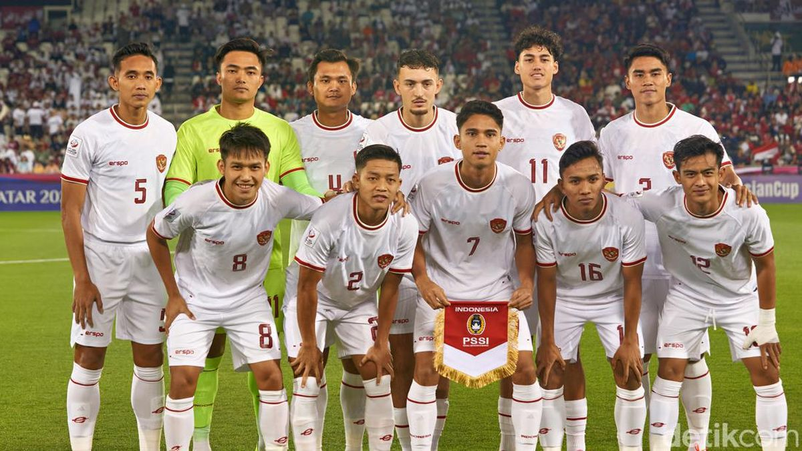

Selamat datang di website saya. Pada website ini akan berisi tentang beberapa pemainTimnas Indonesia u-23 yang saat ini sedang bertanding di Qatar dan tergabung dalam grub A yang akan bertanding dengan 3 klub besar yang berasal dari Qatar, Australia dan juga Jordania.

Tim nasional sepak bola U-23 Indonesia adalah tim nasional sepak bola putra yang berisikan para pemain di bawah usia 23 tahun, yang mewakili Indonesia di cabang olahraga sepak bola Olimpiade Musim Panas, Pesta Olahraga Asia (Asian Games), dan Pesta Olahraga Asia Tenggara (SEA Games), serta kompetisi sepak bola internasional di bawah usia U-23, termasuk Kejuaraan U-23 AFC. Tim nasional ini di bawah kendali Persatuan Sepak Bola Seluruh Indonesia.
Tim ini dibentuk setelah sepak bola pada Olimpiade Musim Panas diubah menjadi kompetisi U-23, dan juga ditangani sebagai tim U-22 saat tidak bermain di kompetisi utama.
15 April 2023:
Qatar Vs Timnas Indonesia U-23 2-0
Jassim Bin Hamad Stadium, Al Rayyan
Pukul 22.30 WIB
18 April 2023:
Timnas Indonesia U-23 Vs Australia
Abdullah bin Khalifa Stadium, Doha
Pukul 20.00 WIB
21 April 2023:
Yordania Vs Timnas Indonesia U-23
Abdullah bin Khalifa Stadium, Doha
Pukul 22.30 WIB
Achievements
Prestasi timnas Indonesia U23 telah mencatat beberapa momen bersejarah dan pencapaian yang patut diapresiasi dalam beberapa tahun terakhir. Berikut beberapa prestasi yang signifikan:
Piala Asia U-23: Timnas Indonesia U23 berhasil lolos ke putaran final Piala Asia U-23 pada beberapa edisi terakhir, seperti pada tahun 2018 dan 2020. Meskipun belum berhasil meraih gelar, pencapaian ini menunjukkan perkembangan dan potensi dari tim muda Indonesia dalam kompetisi tingkat Asia.
SEA Games: Timnas Indonesia U23 juga berkompetisi dalam ajang SEA Games, yang merupakan pentas olahraga terbesar di kawasan Asia Tenggara. Pada beberapa edisi terakhir, Indonesia berhasil meraih prestasi yang cukup baik, termasuk meraih medali.
Piala AFF U-22:Meskipun prestasi ini tidak sebesar Piala Asia U-23 atau SEA Games, kehadiran timnas Indonesia U23 dalam Piala AFF U-22 menunjukkan komitmen untuk mengembangkan bakat-bakat muda sepakbola Indonesia di tingkat regional.
Pencapaian Individual:Selain pencapaian tim, beberapa pemain muda Indonesia yang bermain untuk timnas U23 juga telah mencatat prestasi individu, baik dalam level klub maupun internasional. Ini mencakup keberhasilan mereka dalam turnamen internasional dan peningkatan kinerja dalam liga domestik.